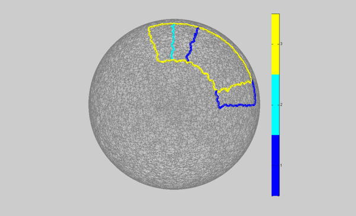
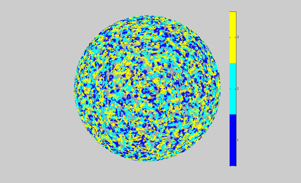
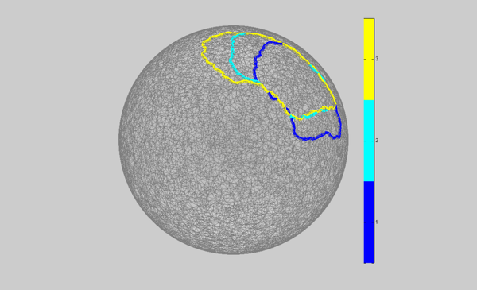

Demo tracking with graph cuts on a triangulated mesh
Implements what is described in :
Neuroimage. 2011 Feb 1;54(3):1930-41. Epub 2010 Oct 7.
Tracking cortical activity from M/EEG using graph cuts with spatiotemporal constraints.
Gramfort A, Papadopoulo T, Baillet S, Clerc M.
Contents
Mesh generator from a point cloud
close all; randn('seed',1); points = randn(30000,3); % points = randn(10000,3); points(points(:,3)<0,:) = []; points = points ./ repmat(sqrt(sum(points.^2,2)),1,3); npoints = size(points,1); points = points; faces = mesh_generator(points); curvature = ones(npoints,1);
method = default
Optimization options
thresh = 0.5; [theta,rho,z] = cart2pol(points(:,1),points(:,2),points(:,3)); thetas = [0 , 2*pi/5 ; 0.5*pi/5 , 2.5*pi/5 ; 0.5*pi/5 , 3*pi/5]; data = []; for ii=1:size(thetas,1) data(:,ii) = theta>thetas(ii,1) & theta<thetas(ii,2) & z > 0.4 & rho>0.5; end data_init = data; % add bad activation data(:,2) = data(:,2) | (theta>4*pi/5 & theta<4.5*pi/5 & z > 0.4 & rho>0.5 & z < 0.8); borders_init = mesh_isolevels(faces,data_init);
[********************]
Ground truth labels image
smart_figure('Initial labels'); clf clear options options.face_vertex_color = 0.4*ones(npoints,3); options.edge_color = [0.5 0.5 0.5]; options.face_alpha = 0.2; mesh_display(points,faces,options); bigfig win_colors = jet(max(size(data,2),2)); clear options options.cmap = win_colors; options.linewidth = 5; mesh_display_isolevels(points,faces,borders_init,options); colormap(win_colors); hcbar = colorbar; ncbar_ticks = length(get(hcbar,'YTickLabel')); caxis([0 size(data,2)]) set(hcbar,'YTick',[1:size(data,2)]-0.5); wmeans = 1:size(data,2); set(hcbar,'YTickLabel',[num2str(wmeans')]);

Add noise to the data
randn('seed',0) noise_amplitude = 1; lambda_space = 2; lambda_time = 0.1; % noise_amplitude = 2; % lambda_space = 2.5; % lambda_time = 0.2; % % noise_amplitude = 3; % lambda_space = 3; % lambda_time = 0.3; noise = noise_amplitude.*randn(size(data)); data = data + noise; SNR = norm(data,'fro') / norm(noise,'fro'); disp(['SNR : ',num2str(SNR)]); npoints = size(points,1); nwin = size(data,2); clear tracking_options tracking_options.weight_type = 2;
SNR : 1.053
Run Thresholding
[labels,borders,maxflow,de,se_space,se_time,face_labels] = mesh_gc_tracking(points,faces,data,thresh,0,0,tracking_options);
---- Using tracking graph-cut v : 29851 :: e : 44738 :: t : 3 -- Starting MaxFlow -- MaxFlow done ! maxflow = data_term + lambda_space * se_space + lambda_time * se_time 0.00e+00 = -3.91e-03 + 0.00e+00 * 2.88e+02 + 0.00e+00 * 2.63e+02 0.00e+00 = -3.91e-03 + 0.00e+00 + 0.00e+00
Thresholding result image
figure; clf clear options options.face_vertex_color = 0.4*ones(npoints,3); options.edge_color = [0.5 0.5 0.5]; options.face_alpha = 0.2; mesh_display(points,faces,options); set(gcf,'Name','Thresholding'); bigfig clear options options.cmap = win_colors; options.linewidth = 5; mesh_display_isolevels(points,faces,borders,options); colormap(win_colors); hcbar = colorbar; ncbar_ticks = length(get(hcbar,'YTickLabel')); caxis([0 size(data,2)]) set(hcbar,'YTick',[1:size(data,2)]-0.5); wmeans = 1:size(data,2); set(hcbar,'YTickLabel',[num2str(wmeans')]);

Run tracking
[labels,borders,maxflow,de,se_space,se_time,face_labels] = mesh_gc_tracking(points,faces,data,thresh,lambda_space,lambda_time,tracking_options);
---- Using tracking graph-cut v : 29851 :: e : 44738 :: t : 3 -- Starting MaxFlow -- MaxFlow done ! maxflow = data_term + lambda_space * se_space + lambda_time * se_time 9.99e+01 = 7.81e+01 + 2.00e+00 * 4.78e+00 + 1.00e-01 * 2.62e+01 9.99e+01 = 7.81e+01 + 9.56e+00 + 2.62e+00
Tracking result image
win_colors = jet(max(nwin,2)); figure; clf clear options options.face_vertex_color = 0.4*ones(npoints,3); options.edge_color = [0.5 0.5 0.5]; options.face_alpha = 0.2; mesh_display(points,faces,options); set(gcf,'Name','Graph Cuts segmentation'); bigfig clear options options.cmap = win_colors; options.linewidth = 5; mesh_display_isolevels(points,faces,borders,options); colormap(win_colors); hcbar = colorbar; ncbar_ticks = length(get(hcbar,'YTickLabel')); caxis([0 size(data,2)]) set(hcbar,'YTick',[1:size(data,2)]-0.5); wmeans = 1:size(data,2); set(hcbar,'YTickLabel',[num2str(wmeans')]);

Quantify result quality
% Percentage of badely labeled vertices err = sum(sum(labels == data_init)) / numel(data); disp(['Error : ',num2str(err)]); % area face_centers = mesh_faces_centers(points,faces); [theta_centers,rho_centers,z_centers] = cart2pol(face_centers(:,1),face_centers(:,2),face_centers(:,3)); face_areas = mesh_areas(points,faces); face_labels_init = []; for ii=1:size(thetas,1) face_labels_init(:,ii) = ~(theta_centers>thetas(ii,1) & theta_centers<thetas(ii,2) & z_centers > 0.4 & rho_centers>0.5); end face_areas_rep = repmat(face_areas',1,size(thetas,1)); err_area = 2*sum(sum(face_areas_rep.*((face_labels==0) .* (face_labels_init==0)))) / ... sum(sum(face_areas_rep.*(face_labels==0)) + sum(face_areas_rep.*(face_labels_init==0))); disp(['Error area (Dice coeff): ',num2str(err_area)]); % number of components ncomp = 0; for ii=1:size(data,2) [p,f] = mesh_remove_points(points,faces,[],find(labels(:,ii)==1)); % close all; mesh_display(p,f); % pause comps = mesh_components(f); ucomps = unique(comps); bcidx = []; for jj=1:length(ucomps) if numel(find(comps==ucomps(jj))) <= 1 bcidx = [bcidx,jj]; end end ucomps(bcidx) = []; ncomp = ncomp + length(ucomps); end disp(['Ncomp : ',num2str(ncomp)]);
Error : 0.0082637 Error area (Dice coeff): 0.96363 Ncomp : 3